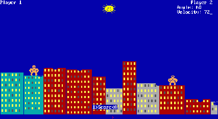

Welcome to world of programming! When the programmer newly introduce to world of programming. We do certain ritual. It's like praying for good fortune. Type following text and run the code!
print "Hello World!"
how about trying some arithmetic?
a = 1+1 b = 3*9 c = 13/2 print(a) print(b) print(c)
do you know fibonacci number? you can program it pretty easily with a few lines of code.
function fibonacci(n)
if n<3 then
return 1
else
return fibonacci(n-1) + fibonacci(n-2)
end
end
print(fibonacci(10))
Now we are going to test how display works in our fantasy console. Try following function fill_rect(0,0,256,256,153,217,234) our console display size is 256x256, which means we are going to fill the 256x256 grid to show something. we put following information(parameters) to the function to draw something on the screen. fill_rect(starting column number,starting row number,width,height,green,blue,red) red,green,blue is 0~255 number that are added together in various ways to make another color
This is a good start! you've just finished your introduction. we will build our first game with this education fantasy console, The Gorillas! Let's continue
